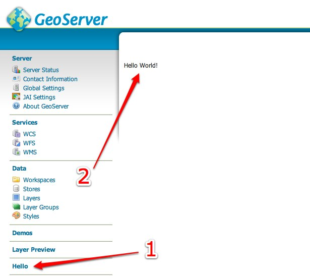

Implementing a Wicket UI Extension¶
This section describes how to implement an extension to the GeoServer Wicket user interface. The extension will be extremely simple and will be a basic page that is linked from the main menu and displays the message “Hello World”.
Prerequisites¶
Before being able to proceed, GeoServer must be built on the local system. See the Source Code and Quickstart sections for details.
Create a new module¶
Create a new module named
hello_websomewhere on the file systemAdd the following
pom.xmlto the root of the new module:<project xmlns="http://maven.apache.org/POM/4.0.0" xmlns:xsi="http://www.w3.org/2001/XMLSchema-instance" xsi:schemaLocation="http://maven.apache.org/POM/4.0.0 http://maven.apache.org/maven-v4_0_0.xsd "> <modelVersion>4.0.0</modelVersion> <parent> <groupId>org.geoserver</groupId> <artifactId>web</artifactId> <version>2.8-SNAPSHOT</version> <!-- change this to the proper GeoServer version --> </parent> <groupId>org.geoserver</groupId> <artifactId>hello_web</artifactId> <packaging>jar</packaging> <version>1.0-SNAPSHOT</version> <name>hello_web</name> <dependencies> <dependency> <groupId>org.geoserver.web</groupId> <artifactId>gs-web-core</artifactId> <version>2.8-SNAPSHOT</version> <!-- change this to the proper GeoServer version --> </dependency> </dependencies> </project>
Create the directory
src/main/javaunder the root of the new module:[hello_web]% mkdir -p src/main/java
Create the page class¶
The class
org.geoserver.web.GeoServerBasePageis the base class for all pages in GeoServer. Create a new class calledHelloPagein the packageorg.geoserver.helloweb, which extends fromGeoServerBasePage:package org.geoserver.helloweb; import org.geoserver.web.GeoServerBasePage; public class HelloPage extends GeoServerBasePage { }
The first task is to implement the constructor. In Wicket a page or component builds itself in its constructor. This page is basic and will simply create a label which has the value “Hello World!”:
import org.apache.wicket.markup.html.basic.Label; ... public HelloPage() { add( new Label( "hellolabel", "Hello World!") ); }
In the above code, an instance of
Labelis created. The first argument to its constructor is the component id. In Wicket every component must have an id. In the next section this id will be used to bind the component to its HTML presentation. The second argument to theLabelconstructor is the value of the world, in this case the string “Hello World!”
Create the page presentation¶
With the page completed, the next step is to create the HTML presentation for the page. To do this create a file named
HelloPage.htmlin the same directory as theHelloPagejavaclass:<html> <body> <wicket:extend> <div wicket:id="hellolabel"></div> </wicket:extend> </body> </html>
There are few things to note about the HTML. The first is the use of the
<wicket:extend>element. This tells wicket thatHelloPageis an extension of another page, in this caseGeoServerBasePage, and it should inherit presentation from that page.The second thing to note is the attribute
wicket:idon the<div>element. This is what binds the<div>tag to theLabelcomponent created in the previous section. The value ofwicket:idmust match the id given to the component, in this case “hellolabel”.
Create the i18n file¶
With Wicket (and any web application framework), any string that appears in the
web application should be interationalized. In GeoServer, this is performed by
creating an internationalization (i18n) file named
GeoServerApplication.properties.
Create the directory
src/main/resourcesunder the root of thehello_webmodule:[hello_web]% mkdir -p src/main/resources
Create the (i18n) file
GeoServerApplication.propertiesin thesrc/main/resourcesdirectory:HelloPage.page.title=Hello HelloPage.page.description=A page to say hello HelloPage.title=Hello Page Title HelloPage.description=This is the description of the page
The first two keys in the above i18n file declare the title of the page and the description of the page. This will be the title of the link to the page and the tooltip for the page link. The next two keys are the title and description that are displayed on the page itself.
Create the application context¶
The final step is to create an application context which tells GeoServer about the page created in the previous section. Add the following
applicationContext.xmlfile to thesrc/main/javadirectory, under the root of thehello_webmodule:<!DOCTYPE beans PUBLIC "-//SPRING//DTD BEAN//EN" "http://www.springframework.org/dtd/spring-beans.dtd"> <beans> <bean id="helloPage" class="org.geoserver.web.MenuPageInfo"> <property name="id" value="helloPage"/> <property name="titleKey" value="HelloPage.page.title"/> <property name="descriptionKey" value="HelloPage.page.description"/> <property name="componentClass" value="org.geoserver.helloweb.HelloPage"/> </bean> </beans>
The above bean declaration declares an instance of the
MenuPageInfoclass which is a descriptor for pages linked from the main page of the GeoServer web application. The propertytitleKeyis the title of the page and it receives the value of the title i18n key created in the previous section. Similar for the thedescriptionKeyproperty.
Test the extension¶
At this point, the hello_web module should look like the following:
hello_web/
pom.xml
src/main/resources
GeoServerApplication.properties
src/main/java
applicationContext.xml
org/geoserver/helloweb/
HelloPage.java
HelloPage.html
Build the
hello_webmodule:[hello_web]% mvn install
Copy the
hello_web-1.0-SNAPSHOT.jarfile from thehello_web/targetdirectory into theWEB-inf/libdirectory of a GeoServer installation:[hello_web]% cp target/hello-1.0-SNAPSHOT.jar /home/bob/geoserver-2.0/webapps/geoserver/WEB-INF/lib
Note
If running GeoServer from eclipse you can edit the
web-app/pom.xmlwith the following dependency:<dependency> <groupId>org.geoserver</groupId> <artifactId>hello_web</artifactId> <version>1.0-SNAPSHOT</version> </dependency>
You will need to run mvn eclipse:eclipse after editing
web-app/pom.xmland then you can refresh thegs-web-appproject in eclipse so it notices the new jar.Start or restart GeoServer
Navigate to http://localhost:8080/geoserver/web
Upon success a link titled Hello should appear in the menu on the left side
of the main GeoServer page. Following the link brings up the HelloPage
